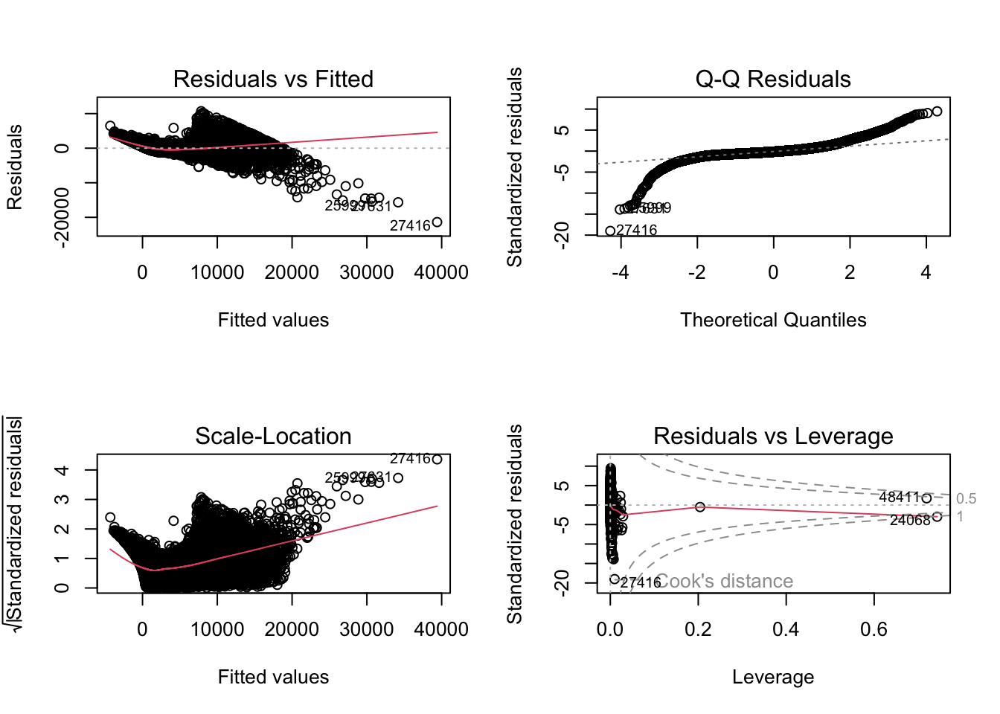
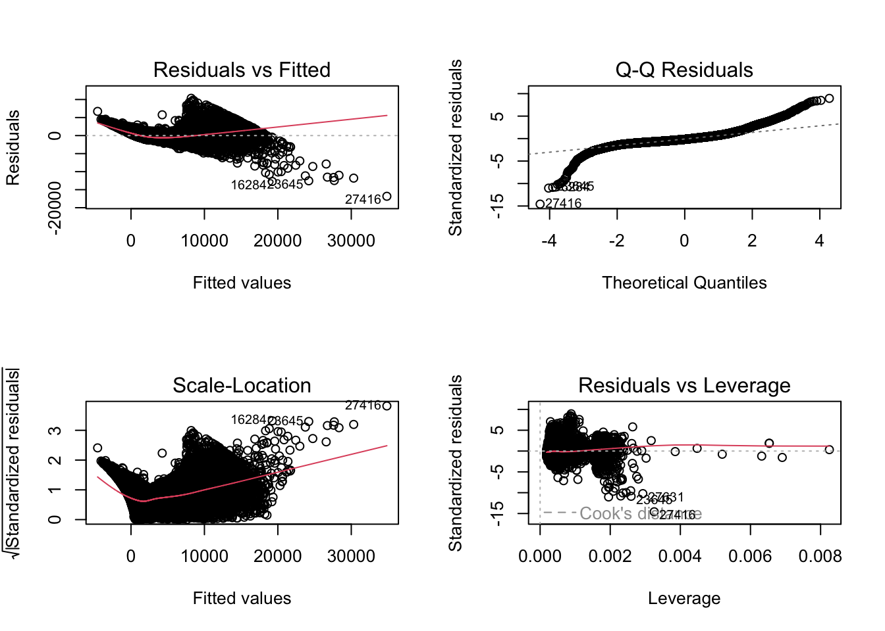
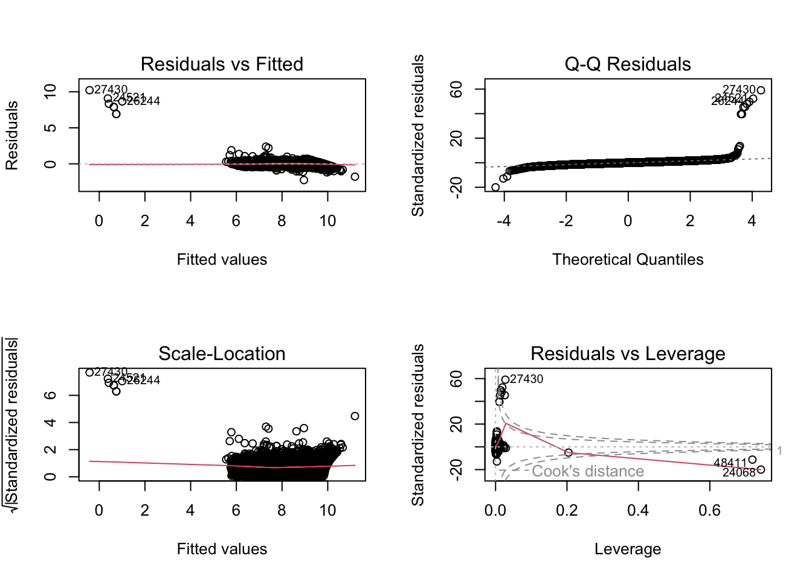
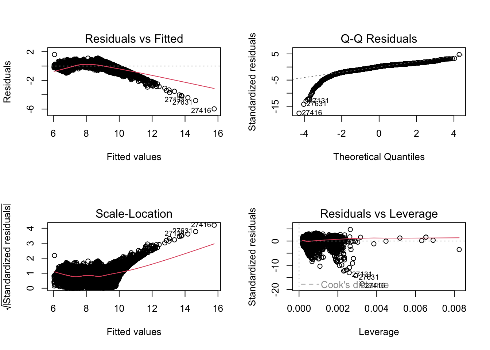
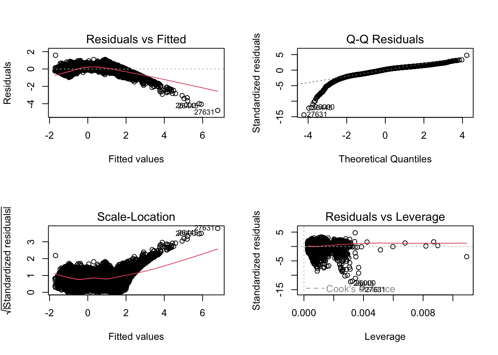
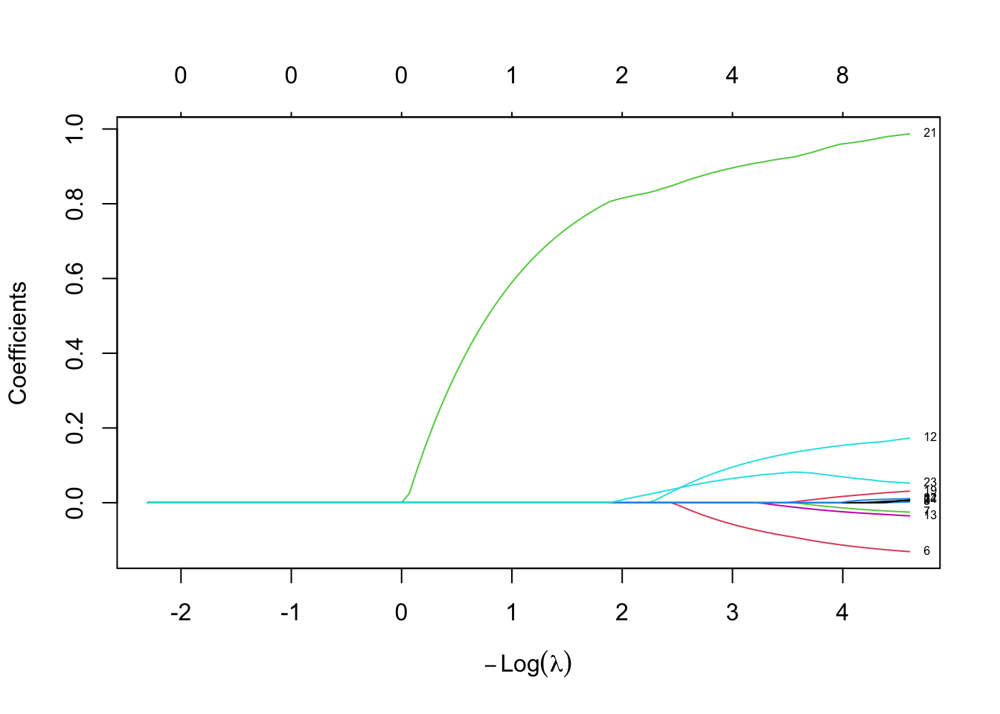
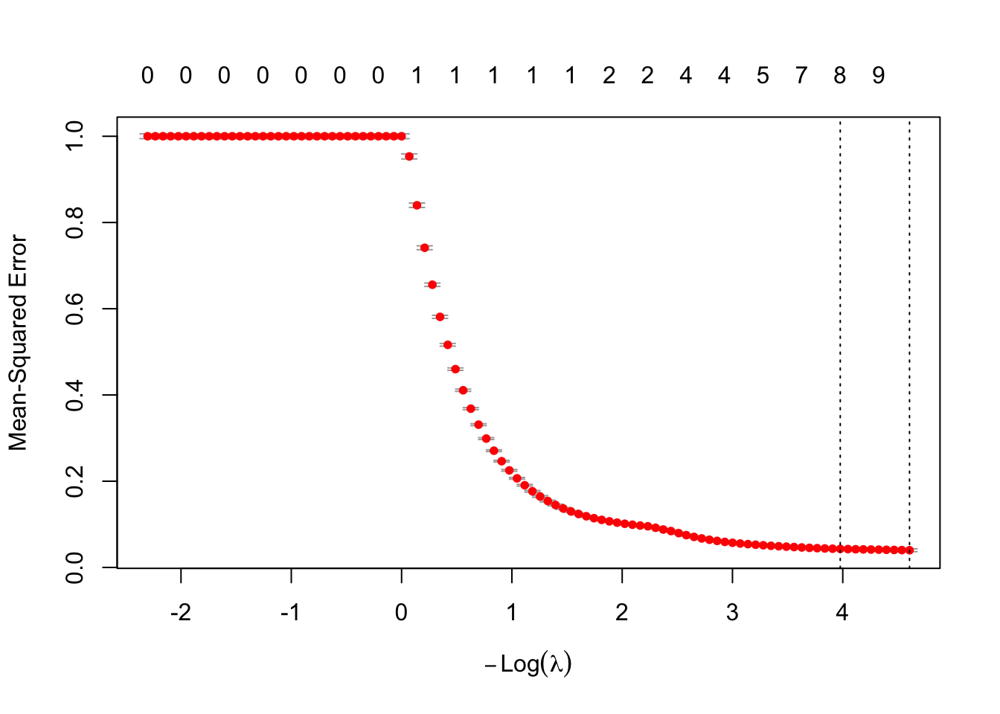
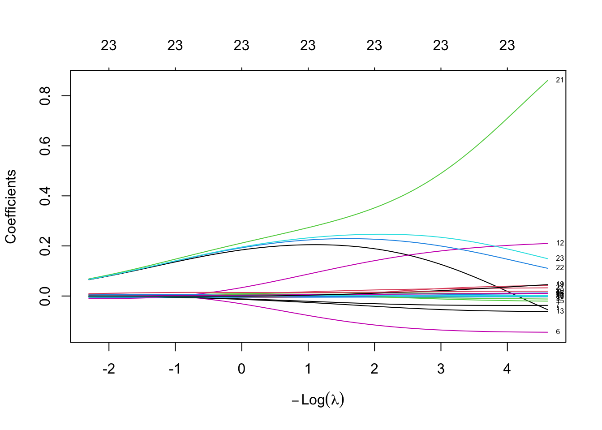
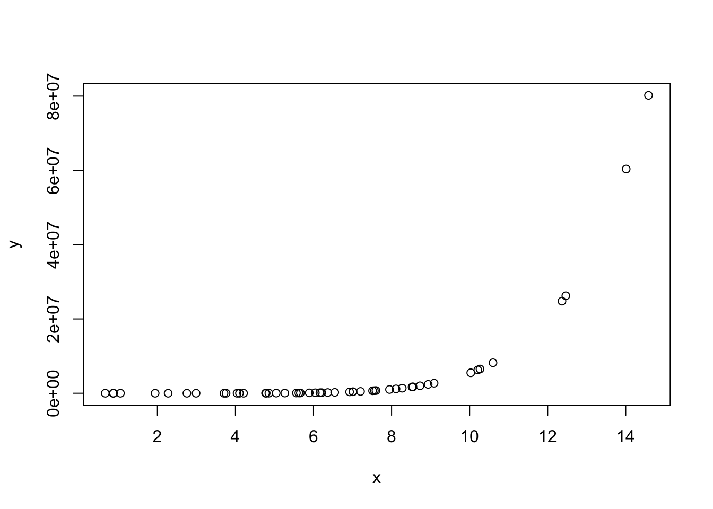

library(tidyverse)
library(caret)
library(car)
library(glmnet)6 Linear Regression
Coverage: Linear Regression, General Linear Regression, Lasso, Ridge, Elastic Net Regression
6.1 Theoritical Knowledge
The multivariate linear Regression \(y = X \beta\) with loss function \(Q = \left\| (y - X \beta) \right\|^2 = (y - X \beta) ^T (y - X \beta)\)
\[ \frac{\partial Q}{\partial \beta} = -2X^Ty + 2X^TX\beta = 0 \\ \to \hat{\beta} = {(X^TX)}^{-1}X^Ty \]
H is called Hat Matrix where: \(\hat{y} = X \hat{\beta} = X (X^TX)^{-1}X^Ty = Hy\)
Normal Equation: \((X^TX)\hat{\beta} = X^Ty \to X^T(y-X\hat{\beta}) = 0\)
\[ R^2 = \frac{SSR}{SST} = 1 - \frac{SSE}{SST} \]
\[ \text{Adjusted-}R^2 = \frac{SSR/k}{SST/(n-1)} = 1- \frac{SSE/(n-k-1)}{SST/(n-1)} \]
Notice that here SSE means Sum Square Error, and SSR means Sum Square Regression. Sometimes you might see ESS which is Explained Sum Square which equals to SSR here, and RSS is Residual Sum Square.
In R, use lm() to fit a linear regression model.
6.2 Example: diamonds dataset
data(diamonds)
head(diamonds)# A tibble: 6 × 10
carat cut color clarity depth table price x y z
<dbl> <ord> <ord> <ord> <dbl> <dbl> <int> <dbl> <dbl> <dbl>
1 0.23 Ideal E SI2 61.5 55 326 3.95 3.98 2.43
2 0.21 Premium E SI1 59.8 61 326 3.89 3.84 2.31
3 0.23 Good E VS1 56.9 65 327 4.05 4.07 2.31
4 0.29 Premium I VS2 62.4 58 334 4.2 4.23 2.63
5 0.31 Good J SI2 63.3 58 335 4.34 4.35 2.75
6 0.24 Very Good J VVS2 62.8 57 336 3.94 3.96 2.48sum(is.na(diamonds))[1] 0str(diamonds)tibble [53,940 × 10] (S3: tbl_df/tbl/data.frame)
$ carat : num [1:53940] 0.23 0.21 0.23 0.29 0.31 0.24 0.24 0.26 0.22 0.23 ...
$ cut : Ord.factor w/ 5 levels "Fair"<"Good"<..: 5 4 2 4 2 3 3 3 1 3 ...
$ color : Ord.factor w/ 7 levels "D"<"E"<"F"<"G"<..: 2 2 2 6 7 7 6 5 2 5 ...
$ clarity: Ord.factor w/ 8 levels "I1"<"SI2"<"SI1"<..: 2 3 5 4 2 6 7 3 4 5 ...
$ depth : num [1:53940] 61.5 59.8 56.9 62.4 63.3 62.8 62.3 61.9 65.1 59.4 ...
$ table : num [1:53940] 55 61 65 58 58 57 57 55 61 61 ...
$ price : int [1:53940] 326 326 327 334 335 336 336 337 337 338 ...
$ x : num [1:53940] 3.95 3.89 4.05 4.2 4.34 3.94 3.95 4.07 3.87 4 ...
$ y : num [1:53940] 3.98 3.84 4.07 4.23 4.35 3.96 3.98 4.11 3.78 4.05 ...
$ z : num [1:53940] 2.43 2.31 2.31 2.63 2.75 2.48 2.47 2.53 2.49 2.39 ...6.2.1 Without preprocessing
fit1 <- lm(price~., diamonds)
summary(fit1)
Call:
lm(formula = price ~ ., data = diamonds)
Residuals:
Min 1Q Median 3Q Max
-21376.0 -592.4 -183.5 376.4 10694.2
Coefficients:
Estimate Std. Error t value Pr(>|t|)
(Intercept) 5753.762 396.630 14.507 < 2e-16 ***
carat 11256.978 48.628 231.494 < 2e-16 ***
cut.L 584.457 22.478 26.001 < 2e-16 ***
cut.Q -301.908 17.994 -16.778 < 2e-16 ***
cut.C 148.035 15.483 9.561 < 2e-16 ***
cut^4 -20.794 12.377 -1.680 0.09294 .
color.L -1952.160 17.342 -112.570 < 2e-16 ***
color.Q -672.054 15.777 -42.597 < 2e-16 ***
color.C -165.283 14.725 -11.225 < 2e-16 ***
color^4 38.195 13.527 2.824 0.00475 **
color^5 -95.793 12.776 -7.498 6.59e-14 ***
color^6 -48.466 11.614 -4.173 3.01e-05 ***
clarity.L 4097.431 30.259 135.414 < 2e-16 ***
clarity.Q -1925.004 28.227 -68.197 < 2e-16 ***
clarity.C 982.205 24.152 40.668 < 2e-16 ***
clarity^4 -364.918 19.285 -18.922 < 2e-16 ***
clarity^5 233.563 15.752 14.828 < 2e-16 ***
clarity^6 6.883 13.715 0.502 0.61575
clarity^7 90.640 12.103 7.489 7.06e-14 ***
depth -63.806 4.535 -14.071 < 2e-16 ***
table -26.474 2.912 -9.092 < 2e-16 ***
x -1008.261 32.898 -30.648 < 2e-16 ***
y 9.609 19.333 0.497 0.61918
z -50.119 33.486 -1.497 0.13448
---
Signif. codes: 0 '***' 0.001 '**' 0.01 '*' 0.05 '.' 0.1 ' ' 1
Residual standard error: 1130 on 53916 degrees of freedom
Multiple R-squared: 0.9198, Adjusted R-squared: 0.9198
F-statistic: 2.688e+04 on 23 and 53916 DF, p-value: < 2.2e-16par(mfrow = c(2, 2))
plot(fit1)
Variance Inflation Factor (VIF) is useful to detect multicollinear.
vif(fit1) GVIF Df GVIF^(1/(2*Df))
carat 22.439582 1 4.737044
cut 1.945645 4 1.086758
color 1.178326 6 1.013768
clarity 1.347474 7 1.021531
depth 1.782401 1 1.335066
table 1.787765 1 1.337073
x 57.518327 1 7.584084
y 20.592160 1 4.537859
z 23.585582 1 4.856499fit1a <- lm(price~.-x-z-y, diamonds)
vif(fit1a) GVIF Df GVIF^(1/(2*Df))
carat 1.323098 1 1.150260
cut 1.926004 4 1.085381
color 1.169317 6 1.013120
clarity 1.303877 7 1.019134
depth 1.378257 1 1.173992
table 1.786714 1 1.336680summary(fit1a)
Call:
lm(formula = price ~ . - x - z - y, data = diamonds)
Residuals:
Min 1Q Median 3Q Max
-16828.8 -678.7 -199.4 464.6 10341.2
Coefficients:
Estimate Std. Error t value Pr(>|t|)
(Intercept) -969.661 360.432 -2.690 0.00714 **
carat 8895.194 12.079 736.390 < 2e-16 ***
cut.L 615.613 22.985 26.784 < 2e-16 ***
cut.Q -326.638 18.390 -17.762 < 2e-16 ***
cut.C 156.333 15.814 9.886 < 2e-16 ***
cut^4 -15.975 12.648 -1.263 0.20657
color.L -1908.010 17.718 -107.689 < 2e-16 ***
color.Q -626.087 16.112 -38.858 < 2e-16 ***
color.C -172.056 15.063 -11.423 < 2e-16 ***
color^4 20.319 13.833 1.469 0.14187
color^5 -85.245 13.068 -6.523 6.95e-11 ***
color^6 -50.085 11.881 -4.216 2.50e-05 ***
clarity.L 4206.854 30.867 136.290 < 2e-16 ***
clarity.Q -1831.804 28.811 -63.580 < 2e-16 ***
clarity.C 919.725 24.672 37.278 < 2e-16 ***
clarity^4 -361.609 19.728 -18.330 < 2e-16 ***
clarity^5 213.910 16.108 13.280 < 2e-16 ***
clarity^6 2.986 14.030 0.213 0.83148
clarity^7 110.147 12.375 8.901 < 2e-16 ***
depth -21.024 4.079 -5.154 2.56e-07 ***
table -24.803 2.978 -8.329 < 2e-16 ***
---
Signif. codes: 0 '***' 0.001 '**' 0.01 '*' 0.05 '.' 0.1 ' ' 1
Residual standard error: 1156 on 53919 degrees of freedom
Multiple R-squared: 0.9161, Adjusted R-squared: 0.916
F-statistic: 2.942e+04 on 20 and 53919 DF, p-value: < 2.2e-16par(mfrow = c(2, 2))
plot(fit1a)
fit2 <- lm(log(price)~., diamonds)
summary(fit2)
Call:
lm(formula = log(price) ~ ., data = diamonds)
Residuals:
Min 1Q Median 3Q Max
-2.2544 -0.0911 0.0015 0.0902 10.2241
Coefficients:
Estimate Std. Error t value Pr(>|t|)
(Intercept) -2.5530834 0.0616229 -41.431 < 2e-16 ***
carat -0.6120540 0.0075551 -81.012 < 2e-16 ***
cut.L 0.1045411 0.0034923 29.934 < 2e-16 ***
cut.Q -0.0370562 0.0027956 -13.255 < 2e-16 ***
cut.C 0.0371749 0.0024056 15.454 < 2e-16 ***
cut^4 0.0115784 0.0019229 6.021 1.74e-09 ***
color.L -0.4526278 0.0026943 -167.993 < 2e-16 ***
color.Q -0.1035542 0.0024512 -42.246 < 2e-16 ***
color.C -0.0118522 0.0022878 -5.181 2.22e-07 ***
color^4 0.0188754 0.0021016 8.982 < 2e-16 ***
color^5 -0.0068063 0.0019850 -3.429 0.000606 ***
color^6 0.0021343 0.0018044 1.183 0.236892
clarity.L 0.8907095 0.0047012 189.466 < 2e-16 ***
clarity.Q -0.2599052 0.0043856 -59.264 < 2e-16 ***
clarity.C 0.1435463 0.0037523 38.255 < 2e-16 ***
clarity^4 -0.0662975 0.0029962 -22.127 < 2e-16 ***
clarity^5 0.0285591 0.0024473 11.670 < 2e-16 ***
clarity^6 -0.0039048 0.0021309 -1.833 0.066881 .
clarity^7 0.0290474 0.0018805 15.447 < 2e-16 ***
depth 0.0521543 0.0007045 74.028 < 2e-16 ***
table 0.0089978 0.0004524 19.890 < 2e-16 ***
x 1.1646945 0.0051112 227.871 < 2e-16 ***
y 0.0325386 0.0030037 10.833 < 2e-16 ***
z 0.0427049 0.0052026 8.208 2.29e-16 ***
---
Signif. codes: 0 '***' 0.001 '**' 0.01 '*' 0.05 '.' 0.1 ' ' 1
Residual standard error: 0.1756 on 53916 degrees of freedom
Multiple R-squared: 0.9701, Adjusted R-squared: 0.9701
F-statistic: 7.597e+04 on 23 and 53916 DF, p-value: < 2.2e-16par(mfrow = c(2, 2))
plot(fit2)
vif(fit2) GVIF Df GVIF^(1/(2*Df))
carat 22.439582 1 4.737044
cut 1.945645 4 1.086758
color 1.178326 6 1.013768
clarity 1.347474 7 1.021531
depth 1.782401 1 1.335066
table 1.787765 1 1.337073
x 57.518327 1 7.584084
y 20.592160 1 4.537859
z 23.585582 1 4.856499fit2a <- lm(log(price)~.-x-z-y, diamonds)
vif(fit2a) GVIF Df GVIF^(1/(2*Df))
carat 1.323098 1 1.150260
cut 1.926004 4 1.085381
color 1.169317 6 1.013120
clarity 1.303877 7 1.019134
depth 1.378257 1 1.173992
table 1.786714 1 1.336680summary(fit2a)
Call:
lm(formula = log(price) ~ . - x - z - y, data = diamonds)
Residuals:
Min 1Q Median 3Q Max
-5.9717 -0.2181 0.0572 0.2479 1.6083
Coefficients:
Estimate Std. Error t value Pr(>|t|)
(Intercept) 5.5193818 0.1055868 52.273 < 2e-16 ***
carat 2.1946870 0.0035386 620.211 < 2e-16 ***
cut.L 0.0682284 0.0067332 10.133 < 2e-16 ***
cut.Q -0.0090647 0.0053872 -1.683 0.0925 .
cut.C 0.0291522 0.0046325 6.293 3.14e-10 ***
cut^4 0.0065684 0.0037051 1.773 0.0763 .
color.L -0.5051100 0.0051903 -97.318 < 2e-16 ***
color.Q -0.1582296 0.0047199 -33.524 < 2e-16 ***
color.C -0.0038111 0.0044125 -0.864 0.3877
color^4 0.0400952 0.0040522 9.895 < 2e-16 ***
color^5 -0.0192706 0.0038283 -5.034 4.82e-07 ***
color^6 0.0041225 0.0034805 1.184 0.2362
clarity.L 0.7615612 0.0090423 84.222 < 2e-16 ***
clarity.Q -0.3710533 0.0084401 -43.963 < 2e-16 ***
clarity.C 0.2181958 0.0072276 30.189 < 2e-16 ***
clarity^4 -0.0704719 0.0057792 -12.194 < 2e-16 ***
clarity^5 0.0521882 0.0047187 11.060 < 2e-16 ***
clarity^6 0.0006772 0.0041100 0.165 0.8691
clarity^7 0.0058294 0.0036253 1.608 0.1078
depth 0.0000854 0.0011950 0.071 0.9430
table 0.0068963 0.0008723 7.906 2.71e-15 ***
---
Signif. codes: 0 '***' 0.001 '**' 0.01 '*' 0.05 '.' 0.1 ' ' 1
Residual standard error: 0.3387 on 53919 degrees of freedom
Multiple R-squared: 0.8886, Adjusted R-squared: 0.8886
F-statistic: 2.151e+04 on 20 and 53919 DF, p-value: < 2.2e-16par(mfrow = c(2, 2))
plot(fit2a)
The second model looks better.
6.2.2 With preprocessing
new_diamonds <- diamonds %>%
predict(dummyVars(price ~ ., data = ., sep = "_", levelsOnly = FALSE), newdata = .) %>%
as.data.frame() %>%
mutate(logprice = log(diamonds$price))
colnames(new_diamonds) <- gsub("\\^", "_", colnames(new_diamonds))
set.seed(42)
training.idx <- new_diamonds$logprice %>%
createDataPartition(p = 0.75, list = F)
trainset <- new_diamonds[training.idx, ]
testset <- new_diamonds[-training.idx, ]
prepproc <- preProcess(trainset, method = c("center", "scale"))
trainset.scaled <- predict(prepproc, trainset)
testset.scaled <- predict(prepproc, testset)
mu <- prepproc$mean["logprice"]
sigma <- prepproc$std["logprice"]
train.x <- trainset.scaled %>% select(-logprice)
test.x <- testset.scaled %>% select(-logprice)fit3 <- lm(logprice~.-x-z-y, trainset.scaled)
summary(fit3)
Call:
lm(formula = logprice ~ . - x - z - y, data = trainset.scaled)
Residuals:
Min 1Q Median 3Q Max
-4.7768 -0.2137 0.0560 0.2444 1.5795
Coefficients:
Estimate Std. Error t value Pr(>|t|)
(Intercept) -3.959e-14 1.653e-03 0.000 1.0000
carat 1.025e+00 1.899e-03 540.026 < 2e-16 ***
cut.L 2.457e-02 2.677e-03 9.179 < 2e-16 ***
cut.Q -4.757e-03 2.791e-03 -1.705 0.0883 .
cut.C 1.268e-02 2.237e-03 5.667 1.46e-08 ***
cut_4 2.137e-03 1.869e-03 1.143 0.2530
color.L -1.603e-01 1.888e-03 -84.918 < 2e-16 ***
color.Q -5.285e-02 1.831e-03 -28.871 < 2e-16 ***
color.C 2.460e-05 1.810e-03 0.014 0.9892
color_4 1.505e-02 1.782e-03 8.448 < 2e-16 ***
color_5 -6.681e-03 1.702e-03 -3.926 8.65e-05 ***
color_6 5.532e-04 1.681e-03 0.329 0.7420
clarity.L 1.891e-01 2.585e-03 73.170 < 2e-16 ***
clarity.Q -8.582e-02 2.271e-03 -37.790 < 2e-16 ***
clarity.C 6.390e-02 2.479e-03 25.779 < 2e-16 ***
clarity_4 -2.354e-02 2.295e-03 -10.257 < 2e-16 ***
clarity_5 1.698e-02 2.012e-03 8.440 < 2e-16 ***
clarity_6 -1.291e-03 1.878e-03 -0.687 0.4920
clarity_7 1.763e-03 1.755e-03 1.005 0.3151
depth -3.771e-05 1.929e-03 -0.020 0.9844
table 1.549e-02 2.215e-03 6.990 2.80e-12 ***
---
Signif. codes: 0 '***' 0.001 '**' 0.01 '*' 0.05 '.' 0.1 ' ' 1
Residual standard error: 0.3325 on 40436 degrees of freedom
Multiple R-squared: 0.8895, Adjusted R-squared: 0.8895
F-statistic: 1.628e+04 on 20 and 40436 DF, p-value: < 2.2e-16vif(fit3) carat cut.L cut.Q cut.C cut_4 color.L color.Q color.C
1.319348 2.621717 2.850233 1.832031 1.278920 1.304379 1.226508 1.199441
color_4 color_5 color_6 clarity.L clarity.Q clarity.C clarity_4 clarity_5
1.161859 1.059918 1.033804 2.445376 1.887271 2.248751 1.926817 1.481558
clarity_6 clarity_7 depth table
1.291236 1.126544 1.362239 1.796295 par(mfrow = c(2, 2))
plot(fit3)
ytr.true <- exp(trainset$logprice)
yte.true <- exp(testset$logprice)
ytr.pred3 <- exp(predict(fit3, train.x) * sigma + mu)
yte.pred3 <- exp(predict(fit3, test.x) * sigma + mu)
pf.lm <- data.frame(
model = "lm",
train.mse = mean((ytr.pred3-ytr.true)^2),
test.mse = mean((yte.pred3-yte.true)^2)
)
pf.lm model train.mse test.mse
1 lm 229599179 4206268380pf.linearRegression <- postResample(
pred = yte.pred3,
obs = yte.true
)6.3 Stepwise regression and best subset
There’re two Information Criterions:
Akaike Information Criterion \(\text{AIC} = - 2 \log{L} + 2 k\)
Bayesian Information Criterion (aka Schwarz IC) \(\text{BIC} = - 2 \log{L} + k \log{N}\)
Here \(L\) denotes the maximum likelihood, \(k\) denotes number of parameters in the model, and \(N\) denotes the number of observations.
When sample size \(N > 7 (e^2 \approx 7.389056)\), BIC is more likely to drop variables compare with AIC.
\[\text{Criterion}=\text{Penalty for Error}+\text{Penalty for Complexity}\]
The smaller, the better.
Stepwise Regression: Backward (start from full model) or Forward (start from null model) then drop or add variables based on greedy strategy.
Best Subset Regression: Iterate all subsets of full variables, then find the best subset.
6.3.1 Stepwise Regression
library(MASS)
Attaching package: 'MASS'The following object is masked from 'package:dplyr':
select6.3.1.1 Backward (start from full model)
set k = 2 for AIC, k = log(nrow(train.data)) for BIC.
When you set trace = 1, every step will be printed.
fit_s1a <- lm(logprice~., trainset.scaled)
fit_step_backward <- stepAIC(fit_s1a, k = log(nrow(trainset.scaled)), trace = 0) # MASS pkg
summary(fit_step_backward)
Call:
lm(formula = logprice ~ carat + cut.L + cut.Q + cut.C + cut_4 +
color.L + color.Q + color.C + color_4 + clarity.L + clarity.Q +
clarity.C + clarity_4 + clarity_5 + clarity_7 + depth + table +
x + y + z, data = trainset.scaled)
Residuals:
Min 1Q Median 3Q Max
-2.2146 -0.0910 0.0021 0.0900 9.8143
Coefficients:
Estimate Std. Error t value Pr(>|t|)
(Intercept) -1.795e-14 8.879e-04 0.000 1.00000
carat -2.533e-01 4.176e-03 -60.651 < 2e-16 ***
cut.L 3.546e-02 1.438e-03 24.663 < 2e-16 ***
cut.Q -1.589e-02 1.500e-03 -10.593 < 2e-16 ***
cut.C 1.484e-02 1.203e-03 12.338 < 2e-16 ***
cut_4 5.114e-03 1.005e-03 5.090 3.60e-07 ***
color.L -1.442e-01 1.015e-03 -142.104 < 2e-16 ***
color.Q -3.530e-02 9.829e-04 -35.917 < 2e-16 ***
color.C -3.310e-03 9.605e-04 -3.446 0.00057 ***
color_4 8.162e-03 9.336e-04 8.743 < 2e-16 ***
clarity.L 2.220e-01 1.386e-03 160.173 < 2e-16 ***
clarity.Q -6.169e-02 1.210e-03 -50.991 < 2e-16 ***
clarity.C 4.353e-02 1.322e-03 32.916 < 2e-16 ***
clarity_4 -2.260e-02 1.190e-03 -18.988 < 2e-16 ***
clarity_5 1.105e-02 1.053e-03 10.498 < 2e-16 ***
clarity_7 1.260e-02 9.034e-04 13.949 < 2e-16 ***
depth 7.160e-02 1.159e-03 61.777 < 2e-16 ***
table 2.002e-02 1.190e-03 16.821 < 2e-16 ***
x 1.276e+00 6.303e-03 202.424 < 2e-16 ***
y 1.456e-02 3.555e-03 4.096 4.21e-05 ***
z 2.997e-02 3.932e-03 7.622 2.55e-14 ***
---
Signif. codes: 0 '***' 0.001 '**' 0.01 '*' 0.05 '.' 0.1 ' ' 1
Residual standard error: 0.1786 on 40436 degrees of freedom
Multiple R-squared: 0.9681, Adjusted R-squared: 0.9681
F-statistic: 6.14e+04 on 20 and 40436 DF, p-value: < 2.2e-16ytr.pred.sb <- exp(fit_step_backward %>% predict(train.x) * sigma + mu)
yte.pred.sb <- exp(fit_step_backward %>% predict(test.x) * sigma + mu)
pf.lm.sb <- data.frame(
model = "Stepwise-Backward",
train.mse = mean((ytr.pred.sb-ytr.true)^2),
test.mse = mean((yte.pred.sb-yte.true)^2)
)
pf.lm.sb model train.mse test.mse
1 Stepwise-Backward 1200659 1243213pf.Stepwise.Backward <- postResample(
pred = yte.pred.sb,
obs = yte.true
)6.3.1.2 Forward (start from null model)
fit_s2a <- lm(logprice~1, trainset.scaled)
fit_s2b <- lm(logprice~., trainset.scaled)
fit_step_forward <- stepAIC(fit_s2a, scope = list(lower = fit_s2a, upper = fit_s2b),
direction = "forward", k = log(nrow(trainset.scaled)), trace = 0) # MASS pkg
summary(fit_step_forward)
Call:
lm(formula = logprice ~ x + clarity.L + color.L + carat + depth +
clarity.Q + color.Q + clarity.C + clarity_4 + cut.L + table +
clarity_7 + cut_4 + clarity_5 + color_4 + z + cut.C + cut.Q +
y + color.C, data = trainset.scaled)
Residuals:
Min 1Q Median 3Q Max
-2.2146 -0.0910 0.0021 0.0900 9.8143
Coefficients:
Estimate Std. Error t value Pr(>|t|)
(Intercept) -1.795e-14 8.879e-04 0.000 1.00000
x 1.276e+00 6.303e-03 202.424 < 2e-16 ***
clarity.L 2.220e-01 1.386e-03 160.173 < 2e-16 ***
color.L -1.442e-01 1.015e-03 -142.104 < 2e-16 ***
carat -2.533e-01 4.176e-03 -60.651 < 2e-16 ***
depth 7.160e-02 1.159e-03 61.777 < 2e-16 ***
clarity.Q -6.169e-02 1.210e-03 -50.991 < 2e-16 ***
color.Q -3.530e-02 9.829e-04 -35.917 < 2e-16 ***
clarity.C 4.353e-02 1.322e-03 32.916 < 2e-16 ***
clarity_4 -2.260e-02 1.190e-03 -18.988 < 2e-16 ***
cut.L 3.546e-02 1.438e-03 24.663 < 2e-16 ***
table 2.002e-02 1.190e-03 16.821 < 2e-16 ***
clarity_7 1.260e-02 9.034e-04 13.949 < 2e-16 ***
cut_4 5.114e-03 1.005e-03 5.090 3.60e-07 ***
clarity_5 1.105e-02 1.053e-03 10.498 < 2e-16 ***
color_4 8.162e-03 9.336e-04 8.743 < 2e-16 ***
z 2.997e-02 3.932e-03 7.622 2.55e-14 ***
cut.C 1.484e-02 1.203e-03 12.338 < 2e-16 ***
cut.Q -1.589e-02 1.500e-03 -10.593 < 2e-16 ***
y 1.456e-02 3.555e-03 4.096 4.21e-05 ***
color.C -3.310e-03 9.605e-04 -3.446 0.00057 ***
---
Signif. codes: 0 '***' 0.001 '**' 0.01 '*' 0.05 '.' 0.1 ' ' 1
Residual standard error: 0.1786 on 40436 degrees of freedom
Multiple R-squared: 0.9681, Adjusted R-squared: 0.9681
F-statistic: 6.14e+04 on 20 and 40436 DF, p-value: < 2.2e-16ytr.pred.sf <- exp(fit_step_forward %>% predict(train.x) * sigma + mu)
yte.pred.sf <- exp(fit_step_forward %>% predict(test.x) * sigma + mu)
pf.lm.sf <- data.frame(
model = "Stepwise-Forward",
train.mse = mean((ytr.pred.sf-ytr.true)^2),
test.mse = mean((yte.pred.sf-yte.true)^2)
)
pf.lm.sb model train.mse test.mse
1 Stepwise-Backward 1200659 1243213pf.Stepwise.Forward <- postResample(
pred = yte.pred.sf,
obs = yte.true
)6.3.2 Best Subset Regression
library(leaps)fit_bs <- regsubsets(logprice~., trainset.scaled, nvmax = 30)
# nvmax = 30: sets the maximum number of predictors to consider.
summary(fit_bs)Subset selection object
Call: regsubsets.formula(logprice ~ ., trainset.scaled, nvmax = 30)
23 Variables (and intercept)
Forced in Forced out
carat FALSE FALSE
cut.L FALSE FALSE
cut.Q FALSE FALSE
cut.C FALSE FALSE
cut_4 FALSE FALSE
color.L FALSE FALSE
color.Q FALSE FALSE
color.C FALSE FALSE
color_4 FALSE FALSE
color_5 FALSE FALSE
color_6 FALSE FALSE
clarity.L FALSE FALSE
clarity.Q FALSE FALSE
clarity.C FALSE FALSE
clarity_4 FALSE FALSE
clarity_5 FALSE FALSE
clarity_6 FALSE FALSE
clarity_7 FALSE FALSE
depth FALSE FALSE
table FALSE FALSE
x FALSE FALSE
y FALSE FALSE
z FALSE FALSE
1 subsets of each size up to 23
Selection Algorithm: exhaustive
carat cut.L cut.Q cut.C cut_4 color.L color.Q color.C color_4 color_5
1 ( 1 ) " " " " " " " " " " " " " " " " " " " "
2 ( 1 ) " " " " " " " " " " " " " " " " " " " "
3 ( 1 ) " " " " " " " " " " "*" " " " " " " " "
4 ( 1 ) "*" " " " " " " " " "*" " " " " " " " "
5 ( 1 ) "*" " " " " " " " " "*" " " " " " " " "
6 ( 1 ) "*" " " " " " " " " "*" " " " " " " " "
7 ( 1 ) "*" " " " " " " " " "*" "*" " " " " " "
8 ( 1 ) "*" " " " " " " " " "*" "*" " " " " " "
9 ( 1 ) "*" " " " " " " " " "*" "*" " " " " " "
10 ( 1 ) "*" "*" " " " " " " "*" "*" " " " " " "
11 ( 1 ) "*" "*" " " " " " " "*" "*" " " " " " "
12 ( 1 ) "*" "*" " " " " " " "*" "*" " " " " " "
13 ( 1 ) "*" "*" " " " " "*" "*" "*" " " " " " "
14 ( 1 ) "*" "*" "*" "*" " " "*" "*" " " " " " "
15 ( 1 ) "*" "*" "*" "*" " " "*" "*" " " " " " "
16 ( 1 ) "*" "*" "*" "*" " " "*" "*" " " "*" " "
17 ( 1 ) "*" "*" "*" "*" " " "*" "*" " " "*" " "
18 ( 1 ) "*" "*" "*" "*" "*" "*" "*" " " "*" " "
19 ( 1 ) "*" "*" "*" "*" "*" "*" "*" " " "*" " "
20 ( 1 ) "*" "*" "*" "*" "*" "*" "*" "*" "*" " "
21 ( 1 ) "*" "*" "*" "*" "*" "*" "*" "*" "*" " "
22 ( 1 ) "*" "*" "*" "*" "*" "*" "*" "*" "*" "*"
23 ( 1 ) "*" "*" "*" "*" "*" "*" "*" "*" "*" "*"
color_6 clarity.L clarity.Q clarity.C clarity_4 clarity_5 clarity_6
1 ( 1 ) " " " " " " " " " " " " " "
2 ( 1 ) " " "*" " " " " " " " " " "
3 ( 1 ) " " "*" " " " " " " " " " "
4 ( 1 ) " " "*" " " " " " " " " " "
5 ( 1 ) " " "*" " " " " " " " " " "
6 ( 1 ) " " "*" "*" " " " " " " " "
7 ( 1 ) " " "*" "*" " " " " " " " "
8 ( 1 ) " " "*" "*" "*" " " " " " "
9 ( 1 ) " " "*" "*" "*" "*" " " " "
10 ( 1 ) " " "*" "*" "*" "*" " " " "
11 ( 1 ) " " "*" "*" "*" "*" " " " "
12 ( 1 ) " " "*" "*" "*" "*" " " " "
13 ( 1 ) " " "*" "*" "*" "*" " " " "
14 ( 1 ) " " "*" "*" "*" "*" " " " "
15 ( 1 ) " " "*" "*" "*" "*" "*" " "
16 ( 1 ) " " "*" "*" "*" "*" "*" " "
17 ( 1 ) " " "*" "*" "*" "*" "*" " "
18 ( 1 ) " " "*" "*" "*" "*" "*" " "
19 ( 1 ) " " "*" "*" "*" "*" "*" " "
20 ( 1 ) " " "*" "*" "*" "*" "*" " "
21 ( 1 ) " " "*" "*" "*" "*" "*" "*"
22 ( 1 ) " " "*" "*" "*" "*" "*" "*"
23 ( 1 ) "*" "*" "*" "*" "*" "*" "*"
clarity_7 depth table x y z
1 ( 1 ) " " " " " " "*" " " " "
2 ( 1 ) " " " " " " "*" " " " "
3 ( 1 ) " " " " " " "*" " " " "
4 ( 1 ) " " " " " " "*" " " " "
5 ( 1 ) " " "*" " " "*" " " " "
6 ( 1 ) " " "*" " " "*" " " " "
7 ( 1 ) " " "*" " " "*" " " " "
8 ( 1 ) " " "*" " " "*" " " " "
9 ( 1 ) " " "*" " " "*" " " " "
10 ( 1 ) " " "*" " " "*" " " " "
11 ( 1 ) " " "*" "*" "*" " " " "
12 ( 1 ) "*" "*" "*" "*" " " " "
13 ( 1 ) "*" "*" "*" "*" " " " "
14 ( 1 ) "*" "*" "*" "*" " " " "
15 ( 1 ) "*" "*" "*" "*" " " " "
16 ( 1 ) "*" "*" "*" "*" " " " "
17 ( 1 ) "*" "*" "*" "*" " " "*"
18 ( 1 ) "*" "*" "*" "*" " " "*"
19 ( 1 ) "*" "*" "*" "*" "*" "*"
20 ( 1 ) "*" "*" "*" "*" "*" "*"
21 ( 1 ) "*" "*" "*" "*" "*" "*"
22 ( 1 ) "*" "*" "*" "*" "*" "*"
23 ( 1 ) "*" "*" "*" "*" "*" "*"result <- summary(fit_bs)
result$which[which.min(result$bic),](Intercept) carat cut.L cut.Q cut.C cut_4
TRUE TRUE TRUE TRUE TRUE TRUE
color.L color.Q color.C color_4 color_5 color_6
TRUE TRUE TRUE TRUE FALSE FALSE
clarity.L clarity.Q clarity.C clarity_4 clarity_5 clarity_6
TRUE TRUE TRUE TRUE TRUE FALSE
clarity_7 depth table x y z
TRUE TRUE TRUE TRUE TRUE TRUE n <- nrow(trainset.scaled) # Sample size
p <- 1:(length(result$rss)) # Model sizes (number of predictors + intercept)
aic_values <- n * log(result$rss / n) + 2 * p # Compute AIC for each model
which.min(aic_values) # Get the model size with the lowest AIC[1] 22result$which[12,](Intercept) carat cut.L cut.Q cut.C cut_4
TRUE TRUE TRUE FALSE FALSE FALSE
color.L color.Q color.C color_4 color_5 color_6
TRUE TRUE FALSE FALSE FALSE FALSE
clarity.L clarity.Q clarity.C clarity_4 clarity_5 clarity_6
TRUE TRUE TRUE TRUE FALSE FALSE
clarity_7 depth table x y z
TRUE TRUE TRUE TRUE FALSE FALSE which.max(result$adjr2)[1] 23result$which[1,](Intercept) carat cut.L cut.Q cut.C cut_4
TRUE FALSE FALSE FALSE FALSE FALSE
color.L color.Q color.C color_4 color_5 color_6
FALSE FALSE FALSE FALSE FALSE FALSE
clarity.L clarity.Q clarity.C clarity_4 clarity_5 clarity_6
FALSE FALSE FALSE FALSE FALSE FALSE
clarity_7 depth table x y z
FALSE FALSE FALSE TRUE FALSE FALSE 6.4 Lasso, Ridge and Elastic Net Regression
A general idea of penealized regression (i.e., Lasso, Ridge and Elastic Net Regression) is to add some restriction to minimize.
6.4.1 Lasso
The defination of Lasso is based on the loss function: \(Q = \left\| (y - X \beta) \right\|^2\) minimized subject to \(\left| \beta \right|_1 < t\)
It can also be written:
\[\min_{\beta \in \mathbb{R}^p} {(\frac{1}{N} \left\| (y - X \beta) \right\|^2 + \lambda \left| \beta \right|_1)}\]
Lasso will let coeffections of the model to 0, which is useful for feature selection.
set alpha = 1 for function glmnet.
lambda <- 10^seq(1,-2,length = 100)
fit.lasso <- glmnet(train.x, trainset.scaled$logprice, alpha = 1, lambda = lambda)
plot(fit.lasso, xvar = "lambda", label = TRUE)
cv.lasso <- cv.glmnet(as.matrix(train.x), trainset.scaled$logprice,alpha = 1, lambda = lambda, nfolds = 10)
plot(cv.lasso)
cv.lasso
Call: cv.glmnet(x = as.matrix(train.x), y = trainset.scaled$logprice, lambda = lambda, nfolds = 10, alpha = 1)
Measure: Mean-Squared Error
Lambda Index Measure SE Nonzero
min 0.01000 100 0.03992 0.003268 11
1se 0.01874 91 0.04297 0.003157 8best_lam <- cv.lasso$lambda.min
lasso_coef <- predict(cv.lasso, s = best_lam, type = "coefficients")
import_coefs <- as.matrix(lasso_coef)
active_vars <- data.frame(
Variable = rownames(import_coefs),
Coefficient = as.numeric(import_coefs)
) %>% filter(Coefficient != 0 & Variable != "(Intercept)")
active_vars Variable Coefficient
1 cut.L 0.006033271
2 color.L -0.130907441
3 color.Q -0.025134709
4 color_4 0.002078327
5 clarity.L 0.172731638
6 clarity.Q -0.035257206
7 clarity.C 0.007961533
8 depth 0.030957031
9 x 0.987147413
10 y 0.010949118
11 z 0.052448464cat("Dropped Variables: ", rownames(import_coefs)[import_coefs[,1] == 0])Dropped Variables: carat cut.Q cut.C cut_4 color.C color_5 color_6 clarity_4 clarity_5 clarity_6 clarity_7 tableytr.pred.lasso <- exp(predict(cv.lasso,s =best_lam, newx=as.matrix(train.x)) * sigma + mu)
yte.pred.lasso <- exp(predict(cv.lasso,s = best_lam,newx= as.matrix(test.x)) * sigma + mu)
pf.lasso <- data.frame(
model = "lasso",
train.mse = mean((ytr.pred.lasso-ytr.true)^2),
test.mse = mean((yte.pred.lasso-yte.true)^2)
)
pf.lasso model train.mse test.mse
1 lasso 3193370 4703154pf.lasso2 <- postResample(
pred = yte.pred.lasso,
obs = yte.true
)6.4.2 Ridge
loss function \(Q = (y - X \beta) ^T (y - X \beta) + \beta^T \beta\)
Ridge works best in situation that OLS has high variance.
\[ \frac{\partial Q}{\partial \beta} = -2X^Ty + 2X^TX\beta + 2 \lambda \beta= 0 \\ \to \hat{\beta} = {(X^TX + \lambda I)}^{-1}X^Ty \]
set alpha = 0 for function glmnet.
lambda <- 10^seq(1,-2,length = 100)
fit.ridge <- glmnet(train.x, trainset.scaled$logprice, alpha = 0, lambda = lambda)
plot(fit.ridge, xvar = "lambda", label = TRUE)
cv.ridge <- cv.glmnet(as.matrix(train.x), trainset.scaled$logprice,alpha = 0, lambda = lambda, nfolds = 10)
plot(cv.ridge)
cv.ridge
Call: cv.glmnet(x = as.matrix(train.x), y = trainset.scaled$logprice, lambda = lambda, nfolds = 10, alpha = 0)
Measure: Mean-Squared Error
Lambda Index Measure SE Nonzero
min 0.01000 100 0.04562 0.008444 23
1se 0.08697 69 0.05379 0.006803 23best_lam <- cv.ridge$lambda.min
ridge_coef <- predict(cv.ridge, s = best_lam, type = "coefficients")
ridge_coef24 x 1 sparse Matrix of class "dgCMatrix"
s=0.01
(Intercept) -1.564928e-14
carat -5.448247e-02
cut.L 3.267201e-02
cut.Q -1.197818e-02
cut.C 1.219518e-02
cut_4 2.998444e-03
color.L -1.446473e-01
color.Q -3.744780e-02
color.C -2.738590e-03
color_4 9.394073e-03
color_5 -3.019684e-03
color_6 7.682292e-04
clarity.L 2.097124e-01
clarity.Q -6.202300e-02
clarity.C 4.186375e-02
clarity_4 -2.048792e-02
clarity_5 9.100290e-03
clarity_6 -1.519407e-03
clarity_7 1.037701e-02
depth 4.537965e-02
table 1.932575e-02
x 8.605183e-01
y 1.107601e-01
z 1.491461e-01ytr.pred.ridge <- exp(predict(cv.ridge,s =best_lam, newx=as.matrix(train.x)) * sigma + mu)
yte.pred.ridge <- exp(predict(cv.ridge,s = best_lam,newx= as.matrix(test.x)) * sigma + mu)
pf.ridge <- data.frame(
model = "ridge",
train.mse = mean((ytr.pred.ridge-ytr.true)^2),
test.mse = mean((yte.pred.ridge-yte.true)^2)
)
pf.ridge model train.mse test.mse
1 ridge 391270522 2773539pf.ridge2 <- postResample(
pred = yte.pred.ridge,
obs = yte.true
)6.4.3 Elastic Net
The alpha argument of the glmnet function is described as:
\[ \frac{1-\alpha}{2} \left\|\beta \right\|_2^2 + \alpha \left\|\beta \right\|_1 \]
That’s why when we set \(\alpha = 1\) means Lasso Regression, and 0 for Ridge Regression.
6.5 Model Diagnosis
6.6 Summary
rbind(
pf.lm,
pf.lm.sb,
pf.lm.sf,
pf.lasso,
pf.ridge
) model train.mse test.mse
1 lm 229599179 4206268380
2 Stepwise-Backward 1200659 1243213
3 Stepwise-Forward 1200659 1243213
4 lasso 3193370 4703154
5 ridge 391270522 2773539rbind(
pf.linearRegression,
pf.Stepwise.Backward,
pf.Stepwise.Forward,
pf.lasso2,
pf.ridge2
) RMSE Rsquared MAE
pf.linearRegression 64855.751 0.01863255 2350.7410
pf.Stepwise.Backward 1114.994 0.93432609 486.5987
pf.Stepwise.Forward 1114.994 0.93432609 486.5987
pf.lasso2 2168.676 0.81577988 664.7580
pf.ridge2 1665.395 0.88162500 587.01516.7 Bad Example (Random Numbers)
x <- rnorm(50, 6,3)
y <- 10+ 2*x - 3 *x^3 -6*x^5 + 0.6 * x^7 + rnorm(50,10,8)
plot(x,y)
lm(y~x) %>%
summary()
Call:
lm(formula = y ~ x)
Residuals:
Min 1Q Median 3Q Max
-9551661 -7168900 -2518269 3203266 51954823
Coefficients:
Estimate Std. Error t value Pr(>|t|)
(Intercept) -14210959 3541874 -4.012 0.00021 ***
x 2911495 486816 5.981 2.68e-07 ***
---
Signif. codes: 0 '***' 0.001 '**' 0.01 '*' 0.05 '.' 0.1 ' ' 1
Residual standard error: 11180000 on 48 degrees of freedom
Multiple R-squared: 0.427, Adjusted R-squared: 0.4151
F-statistic: 35.77 on 1 and 48 DF, p-value: 2.683e-07lm(y~x+I(x^2)+I(x^3)+I(x^4)+I(x^5)+I(x^6)+I(x^7)) %>%
summary()
Call:
lm(formula = y ~ x + I(x^2) + I(x^3) + I(x^4) + I(x^5) + I(x^6) +
I(x^7))
Residuals:
Min 1Q Median 3Q Max
-14.0609 -5.1669 -0.8895 4.8241 16.1121
Coefficients:
Estimate Std. Error t value Pr(>|t|)
(Intercept) 5.714e+01 2.726e+01 2.096 0.0421 *
x -7.012e+01 5.435e+01 -1.290 0.2040
I(x^2) 4.399e+01 3.591e+01 1.225 0.2274
I(x^3) -1.544e+01 1.123e+01 -1.376 0.1762
I(x^4) 1.855e+00 1.873e+00 0.990 0.3278
I(x^5) -6.150e+00 1.712e-01 -35.933 <2e-16 ***
I(x^6) 6.295e-03 8.064e-03 0.781 0.4394
I(x^7) 5.999e-01 1.529e-04 3922.666 <2e-16 ***
---
Signif. codes: 0 '***' 0.001 '**' 0.01 '*' 0.05 '.' 0.1 ' ' 1
Residual standard error: 7.238 on 42 degrees of freedom
Multiple R-squared: 1, Adjusted R-squared: 1
F-statistic: 2.854e+13 on 7 and 42 DF, p-value: < 2.2e-16